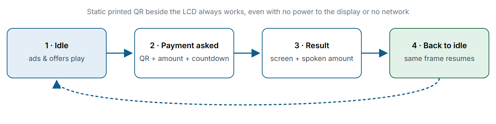

Embedded Firmware · Professional project · Sole firmware engineer
ezPayPlus Display Terminal
Firmware for a countertop UPI payment terminal that doubles as a digital ad display. It runs on a single ESP32-S3: between payments it plays video ads; when a payment comes in it switches the same screen to a QR code, confirms the payment on screen and with a spoken announcement, then returns to the ads.
- ESP32-S3
- ESP-IDF v6
- FreeRTOS
- LVGL
- ESP GMF
- TinyUSB
- NimBLE
- MQTT/TLS over 4G
- I²S
~20,800lines of C
30protocol commands
13FreeRTOS tasks
4links: USB · BLE · 4G · SD

What I built
- Video pipeline: MJPEG and JPEG playback from SD card through a GMF pipeline, with two custom elements I wrote and double-buffered DMA output to a 320×480 SPI LCD.
- Sharing one screen: LVGL payment screens take the same panel over from the video pipeline and hand it back without glitches.
- Payment state machine: table-driven, covering QR, result, timeout, cancel and text messages.
- Binary USB protocol: CRC32-checked packets with ACK/NACK to an Android host. The same commands work over BLE.
- Ad campaigns: uploads that survive power loss, schedules by date and time of day, and an audience-attention metric.
- 4G connectivity: an AT-command engine for the SIMCom A7670C with modem-reboot detection, and MQTT over TLS with request and transaction IDs matched.
- Spoken confirmation: "Rupees … received" built from recorded word clips, played over I²S.
- Firmware updates: two-slot (A/B) update over BLE, plus host-set time, log capture and memory diagnostics.

Hardware problems I diagnosed and fixed
- LVGL watchdog hang on the result screen: an off-screen animation layer needed more memory than LVGL's pool had. Fixed with a 128 KB PSRAM pool.
- Video froze after the first payment: LVGL overwrote the panel's DMA-done callback. Fixed by re-registering it on every resume.
- Crash when closing a screen: LVGL's refresh ran between delete and detach. Fixed by reversing the order.
- Stack overflows in the LVGL and keypad tasks: each resized from the overflow seen on hardware.
- SD card out of DMA memory during audio: BLE plus Wi-Fi used up internal RAM. Moved NimBLE to PSRAM and made Wi-Fi optional.
- 4G modem reboot loop: supply voltage dropped during transmit bursts. Fixed on the board, plus automatic recovery in firmware.
- Wrong colours from the decoder: a GMF element copy lost a setting that lives in internal state. Set it on the pipeline's own copy.
- Two payment commands slipping through: closed by setting the state before queuing the event.
This is commercial work, so this page leaves out internal details. The full technical write-up (architecture, protocol, the state machine, the testing approach and the status of every feature) is available on request.
← All projects